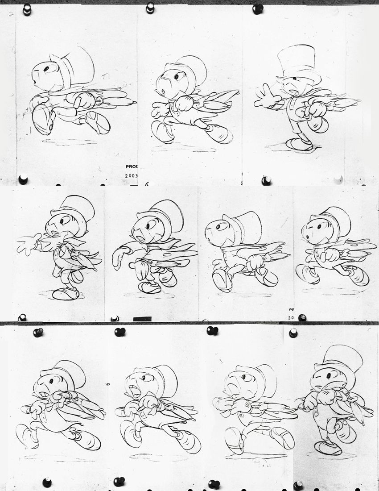
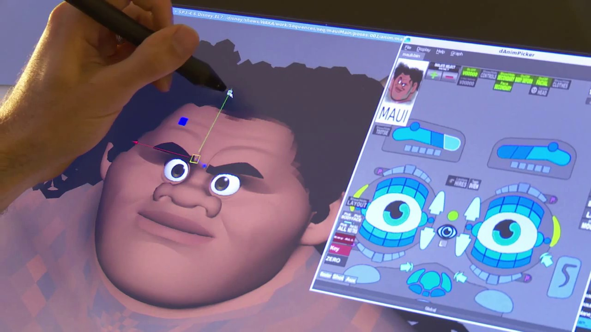

Disney:
Een van de succesvolste onderdelen van Animatie is Walt Disney Feature Animation, verantwoordelijk voor een groot aantal klassieke en traditionele animatiefilms.
Uiteindelijk begin 21ste eeuw begon Disney te experimenteren met 3D animatie en zijn ze van 2d handgetekend afgestapt. Eerst was daar veel kritiek op, maar na veel positieve reactie op hun 3D films niet meer.
Menig Disneyfan gelooft dat Disney zich bevindt in het midden van een nieuwe renaissance, en worden vooral de films Tangled, Wreck-it Ralph en Frozen vergeleken met klassiekers als The Little Mermaid, Beauty and the Beast, Aladdin, en The Lion King.

Een Frame by Frame ren animatie van Japie de krekel uit Disney’s “Pinocchio”
Doordat Disney besliste om alleen nog maar computeranimatiefilms te gaan maken, werden zij een directe concurrent van hun partner Pixar. Disney en Pixar werden het niet eens over een verlenging van het contract tussen beide studio's, waardoor Pixar een nieuwe partner voor de distributie van hun films moest gaan zoeken. Uiteindelijk is Pixar opgekocht door Disney en is Pixar nu een deel van het bedrijf.

Een kijkje achter de schermen bij Disney’s “Moana”
| Disney Film | Jaar | Opbrengst |
|---|---|---|
| Avengers: Endgame | 2019 | $2.797.800.564 |
| Avatar | 2009 | $2.790.439.92 |
| Star Wars: Episode VII: The Force Awakens | 2015 | $2.068.224.036 |